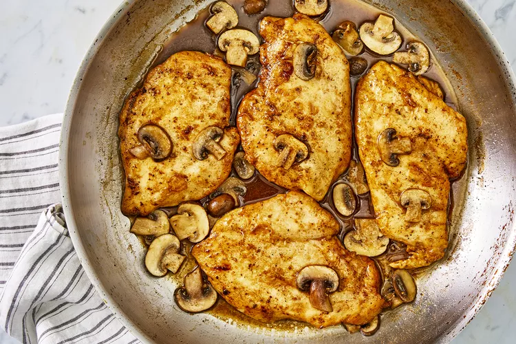

Chicken Marsala Recipe

What to Serve With Chicken Marsala
This family-friendly chicken recipe pairs well with many side dishes. Try
a cheesy risotto or Tuscan white beans for a full Italian meal, or opt for
classic dinner rolls. Any way you serve it, this decadent Chicken Marsala
is sure to be a hit.
Ingredients
- ¼ cup all-purpose flour for coating
- ½ teaspoon salt
- ¼ teaspoon ground black pepper
- ½ teaspoon dried oregano
-
4 medium skinless, boneless chicken breast halves - pounded 1/4 inch
thick
- 4 tablespoons butter
- 4 tablespoons olive oil
- 1 cup sliced mushrooms
- ½ cup Marsala wine
- ¼ cup cooking sherry
How to Make Chicken Marsala Step-By-Step
- Gather all ingredients.
-
In a shallow dish or bowl, mix together the flour, salt, pepper and
oregano.
- Coat chicken pieces in flour mixture.
-
In a large skillet, melt butter in oil over medium heat. Place chicken
in the pan, and lightly brown.
-
Turn over chicken pieces, and add mushrooms. Pour in wine and sherry.
-
Cover skillet; simmer chicken 10 minutes, turning once, until no longer
pink and juices run clear.